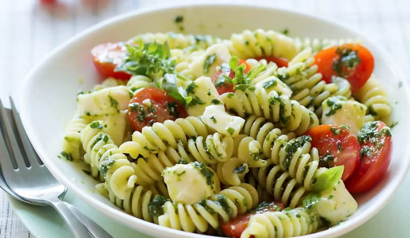
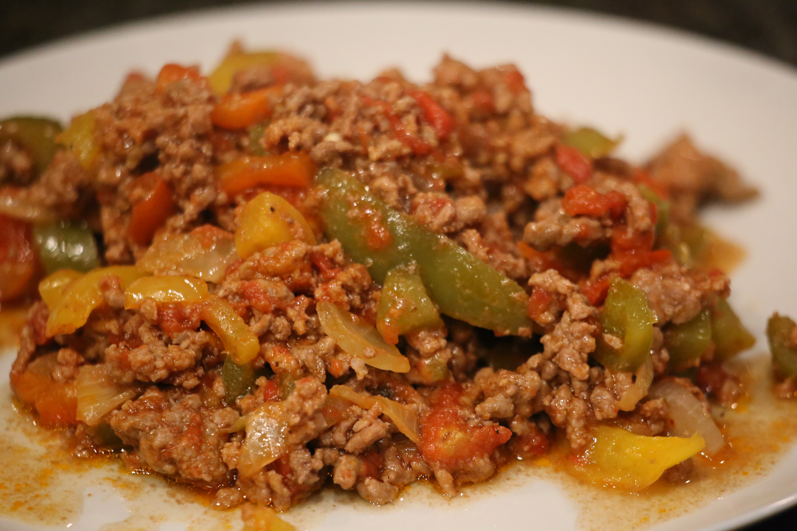
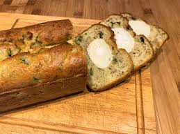
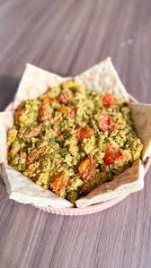

Plats

Salade de pâtes froides au pesto
10 min
5 portions

Bœuf haché aux poivrons
10 min
4 portions

Cake courgette & chèvre
15 min
4 portions
Feuilletés au chèvre & lardons
10 min
4 portions
Feuilleté Courgettes / Jambon
15 min
4 portions
Pizza Tartine Pain de Mie
10 min
4 portions

Omelette Spéciale
10 min
2-3 portions
Courgettes Snackées Chèvre-Miel
10 min
2 portions
Tarte Courgette / Mozza / Pesto
15 min
2-3 portions

Gaufres de Riz façon Sushi
20 min
2-3 portions